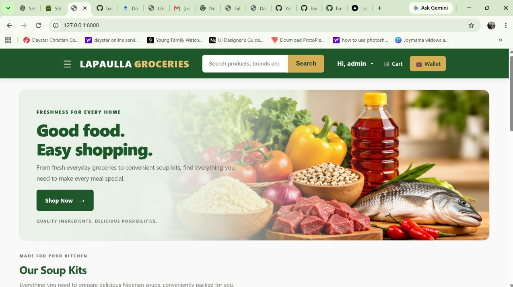

Backend Development
Developing server-side functionality, application workflows, authentication systems and database-driven features using Python and Django.
PYTHON BACKEND DEVELOPER
I'm Dennis Barnabas Ofon, a Python Backend Developer specialising in Django and backend application development. I work on designing backend architecture, building database driven applications, implementing business logic and translating operational requirements into structured software solutions. My focus is on developing reliable, maintainable systems that solve practical business problems.
Python · Django · Backend Engineering
HELLO, I'M
Python Backend Developer
01 / ABOUT ME
I approach software development with a business-first mindset. I believe effective software starts with understanding the problem, identifying operational requirements and designing solutions that address real-world needs.
My technical focus is Python and Django, working across backend architecture, application logic, database design, user authentication and data management. I enjoy turning business requirements into structured application functionality.
Beyond implementing individual features, I am interested in understanding how complete systems work i.e how components communicate, how data flows through an application and how business rules are translated into reliable processes.
I value clean code, maintainable architecture, security and clear documentation. I am continuously developing my engineering skills with the goal of building software that is practical, reliable and ready to evolve.
02 / MY CONTRIBUTION
The areas where I focus my technical development and contribution to software teams.
Developing server-side functionality, application workflows, authentication systems and database-driven features using Python and Django.
Structuring backend components, organising application responsibilities and understanding how models, views, routing and business logic work together to support maintainable applications.
Translating business requirements into application rules, processes and workflows that support real-world operational needs.
Structuring application data, defining model relationships and implementing database operations that support reliable system functionality.
Investigating application issues, debugging code and improving existing implementations for better functionality, structure and maintainability.
Understanding technical requirements, documenting implementation decisions and progressing development through structured milestones.
03 / SELECTED PROJECTS
A closer look at the applications I've been building and the engineering concepts behind them.
FEATURED PROJECT / 001
E-commerce Web Application
A Django-powered grocery e-commerce application designed to support product management and online purchasing. The project explores how business requirements translate into application functionality, database structures and administrative workflows.

TECHNOLOGY STACK
APPLICATION FUNCTIONALITY
ENGINEERING FOCUS
ENGINEERING PERSPECTIVE
My interest extends beyond the user interface to the architecture, data relationships and application logic that make a web application work.
04 / BACKEND ARCHITECTURE
My interest in backend engineering goes beyond individual features. I focus on understanding how application components interact, how data moves through a system and how architecture supports reliable software.
SYSTEM DESIGN OVERVIEW
Templates · HTML · CSS · JavaScript
Django URLs · Views · Request validation
Business rules · Validation · Workflows
Django Models · ORM · Relationships
SQLite · Persistent application data
Each layer has a responsibility. Clear separation makes applications easier to understand, maintain, test and extend as requirements evolve.
Conceptual architecture illustration of a typical Django application, not a verified implementation map of every component in Lapaulla Groceries.
Organising application responsibilities so that presentation, request handling, business rules and data management remain understandable.
Thinking carefully about database relationships, validation and the consistency of information throughout application workflows.
Building with readable structure, clear naming, documentation and an approach that supports future improvements.
05 / MY JOURNEY
2023 — 2027
Lagos State University of Education
Studying Mathematics has strengthened my analytical thinking, logical reasoning and ability to approach complex problems through structured methods.
Alongside my academic journey, I have been developing my software engineering skills through practical Python and Django projects, backend application development and continuous problem-solving.
I continue to build my understanding of backend architecture, database-driven applications and the engineering principles behind reliable software.
05 / TECHNICAL TOOLKIT
Python
JavaScript
HTML5 & CSS3
Django
Django ORM
Application Logic
Authentication & Authorisation
CRUD Operations
URL Routing & Views
MVC / MVT Architecture Concepts
Separation of Concerns
Application Structure
Database Relationships
Maintainable Code Organisation
SQLite
Relational Database Concepts
Database Modelling
ORM-Based Data Operations
Git & GitHub
PowerShell
Python Virtual Environments
pip & Package Management
Command-Line Development
REST API Development· Business Process Automation · System Integration · Software Testing · Scalable Applications
06 / CODE & IMPLEMENTATION
I believe technical ability should be demonstrated through implementation, not just described. Explore my repositories to see my code, project structure and practical approach to problem-solving.
Explore My GitHub →07 / GET IN TOUCH
I'm open to Python and Django development opportunities where I can contribute to backend engineering, application architecture and business-focused software solutions.
I'm particularly interested in collaborating with development teams, building practical applications and continuously improving my software engineering skills.